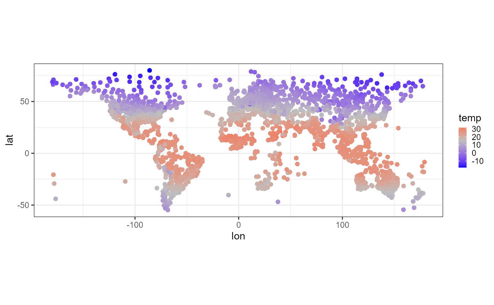
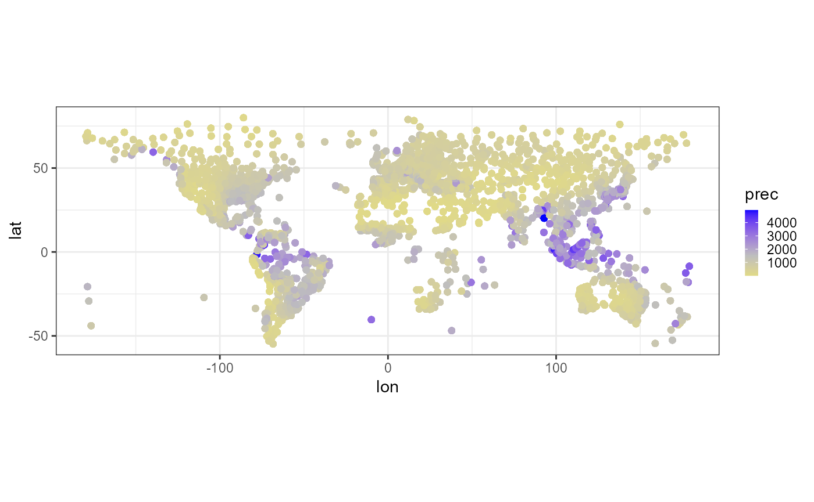
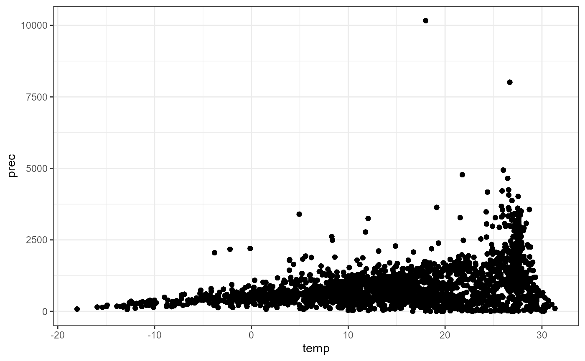
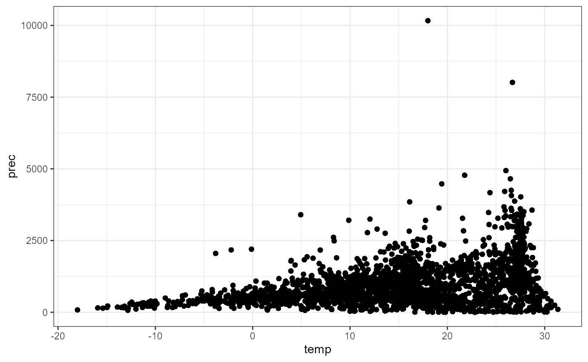
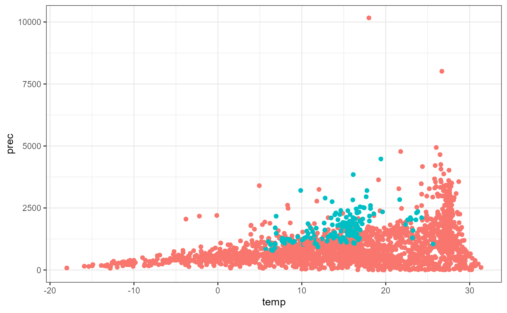

Japan Meteorological Agency (‘JMA’) web page
‘JMA’ web page consists of some layers. You can use different function for download each component.
- Area select: download_area_links()
- Country select: download_links()
- Station select: download_links()
- Climate data of a station: download_climate()
Links for climate data and station information
I recommend to use existing data, which are already downloaded and cleaned up.
When you want to download links for climate data, use download_area_links() and download_links(). download_area_links() returns links for 6 areas. download_links() returns links for countries and stations.
For polite scraping, 5 sec interval is set in download_links(), it takes about 15 minutes to get all station links. Please use existing links by “data(station_links)”, if you do not need to renew links.
library(clidatajp)
library(magrittr)
library(dplyr)
#>
#> Attaching package: 'dplyr'
#> The following objects are masked from 'package:stats':
#>
#> filter, lag
#> The following objects are masked from 'package:base':
#>
#> intersect, setdiff, setequal, union
library(tibble)
library(ggplot2)
library(stringi)
# existing data
data(station_links)
station_links %>%
dplyr::mutate("station" := stringi::stri_unescape_unicode(station)) %>%
print() %>%
`$`("station") %>%
clean_station() %>%
dplyr::bind_cols(station_links["url"])
# Download new data
# If you want links for all countries and all sations, remove head().
url <- "https://www.data.jma.go.jp/gmd/cpd/monitor/nrmlist/"
res <- gracefully_fail(url)
if(!is.null(res)){
area_links <- download_area_links()
station_links <- NULL
area_links <- head(area_links) # for test
for(i in seq_along(area_links)){
print(stringr::str_c("area: ", i, " / ", length(area_links)))
country_links <- download_links(area_links[i])
country_links <- head(country_links) # for test
for(j in seq_along(country_links)){
print(stringr::str_c(" country: ", j, " / ", length(country_links)))
station_links <- c(station_links, download_links(country_links[j]))
}
}
station_links <- tibble::tibble(url = station_links)
station_links
}Climate data
I recommend to use existing data, which are already downloaded and cleaned up.
When you want to know how to prepare “data(climate_jp)”, please check url shown below.
https://github.com/matutosi/clidatajp/blob/main/data-raw/climate_jp.R
For polite scraping, 5 sec interval is set in download_climate(), it takes over 5 hours to get world climate data of all stations because of huge amount of data (3444 stations). Please use existing data by “data(climate_world)”, if you do not need to renew climate data.
# existing data
data(climate_jp)
climate_jp %>%
dplyr::mutate_if(is.character, stringi::stri_unescape_unicode)
data(climate_world)
climate_world %>%
dplyr::mutate_if(is.character, stringi::stri_unescape_unicode)
# Download new data
# If you want links for all countries and all sations, remove head().
url <- "https://www.data.jma.go.jp/gmd/cpd/monitor/nrmlist/"
res <- gracefully_fail(url)
if(!is.null(res)){
station_links <-
station_links %>%
head() %>%
`$`("url")
climate <- list()
for(i in seq_along(station_links)){
print(stringr::str_c(i, " / ", length(station_links)))
climate[[i]] <- download_climate(station_links[i])
}
world_climate <- dplyr::bind_rows(climate)
world_climate
}Plot
Clean up data before drawing plot.
data(climate_world)
data(climate_jp)
climate <-
dplyr::bind_rows(climate_world, climate_jp) %>%
dplyr::mutate_if(is.character, stringi::stri_unescape_unicode) %>%
dplyr::group_by(country, station) %>%
dplyr::filter(sum(is.na(temperature), is.na(precipitation)) == 0) %>%
dplyr::filter(period != "1991-2020" | is.na(period))
climate <-
climate %>%
dplyr::summarise(temp = mean(as.numeric(temperature)), prec = sum(as.numeric(precipitation))) %>%
dplyr::left_join(dplyr::distinct(dplyr::select(climate, station:altitude))) %>%
dplyr::left_join(tibble::tibble(NS = c("S", "N"), ns = c(-1, 1))) %>%
dplyr::left_join(tibble::tibble(WE = c("W", "E"), we = c(-1, 1))) %>%
dplyr::group_by(station) %>%
dplyr::mutate(lat = latitude * ns, lon = longitude * we)
#> `summarise()` has regrouped the output.
#> Adding missing grouping variables: `country`
#> Joining with `by = join_by(country, station)`
#> Joining with `by = join_by(NS)`
#> Joining with `by = join_by(WE)`
#> ℹ Summaries were computed grouped by country and station.
#> ℹ Output is grouped by country.
#> ℹ Use `summarise(.groups = "drop_last")` to silence this message.
#> ℹ Use `summarise(.by = c(country, station))` for per-operation grouping
#> (`?dplyr::dplyr_by`) instead.Draw a world map with temperature.
climate %>%
ggplot2::ggplot(aes(lon, lat, colour = temp)) +
scale_colour_gradient2(low = "blue", mid = "gray", high = "red", midpoint = 15) +
geom_point() +
coord_fixed() +
theme_bw() +
theme(legend.key.size = unit(0.3, 'cm'))
# ggsave("temperature.png")Draw a world map with precipitation except over 5000 mm/yr (to avoid extended legend).
climate %>%
dplyr::filter(prec < 5000) %>%
ggplot2::ggplot(aes(lon, lat, colour = prec)) +
scale_colour_gradient2(low = "yellow", mid = "gray", high = "blue", midpoint = 1500) +
geom_point() +
coord_fixed() +
theme_bw() +
theme(legend.key.size = unit(0.3, 'cm'))
# ggsave("precipitation.png")Show relationships between temperature and precipitation except Japan.
japan <- stringi::stri_unescape_unicode("\\u65e5\\u672c")
climate %>%
dplyr::filter(country != japan) %>%
ggplot2::ggplot(aes(temp, prec)) +
geom_point() +
theme_bw() +
theme(legend.position="none")
# ggsave("climate_nojp.png")Show relationships between temperature and precipitation including Japan.
climate %>%
ggplot2::ggplot(aes(temp, prec)) +
geom_point() +
theme_bw()
# ggsave("climate_all.png")Show relationships between temperature and precipitation. Blue: Japan, red: others.
climate %>%
dplyr::mutate(jp = (country == japan)) %>%
ggplot2::ggplot(aes(temp, prec, colour = jp)) +
geom_point() +
theme_bw() +
theme(legend.position="none")
# ggsave("climate_compare_jp.png")